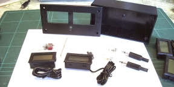
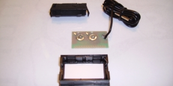
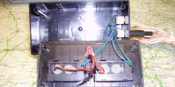
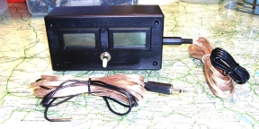

NAVIGATION
TOP of Page
MAIN Page
HOME Page
THERMOMETER
About
Parts
Assembly
Testing
|
About the Project
It's lunchtime at Mythical Motors, so the staff grab some sandwiches, make a cup of
tea and head for the lunch room.
Merlin: "I'm going to fit an external transmission oil cooler to an early model C5, as
the AL4 auto changes gear a bit roughly when it gets hot. Yesterday I bought a small
radiator for $100 on special at Auto-Pro and intend fitting it behind the main radiator."
Merlin needs to monitor the inlet and outlet temperatures on the radiator.
Sometime later Merlin has purchased a few probe thermometers, such as used for
cooking. These are handed to The Boffin to see if they can be modified by extending
the probe to 3 metres.
The Boffin: "Leave it with me and I'll see what I can do."
The Boffin turns up a week later with a twin meter setup mounting a couple of -50C
to +110C Fish Tank thermometers, now having the external probe on a 3 metre cable.
These are available on eBay as 5pcs Temperature Gauge LCD Digital Thermometer
Fridge or Aquarium Fish Tank BI596, cost $14.70 for 5 pieces with free postage -
which is cheaper than buying 2 elsewhere.
TOP
MAIN
HOME
Parts
2X Fish Tank Thermometers type BI596 - eBay
1X Case - Jaycar HB6013
2X Plugs 3.5mm - Jaycar PP0114
2X Sockets 3.5mm - Jaycar PS0122
1X Switch SPDT - Jaycar ST0336
1X Battery Holder AAA - Jaycar PH9260
1X Battery AAA - Jaycar SB2426
4 metres speaker cable - Jaycar WB170
Thin insulated wire - various 10cm pieces
Heatshrink - to suit cabling
 Parts Required
TOP
MAIN
HOME
Assembly
In the case cut two rectangular holes 4.6 X 2.6cm for the meters, 1.5cm down from the
top and 1cm apart. At 5cm down centred, drill a 6mm hole for the switch. On the side
drill two holes to mount the 3.5mm sockets.
Unclip each meter cases and unsolder the leads for the probe and the two clips each for
the two batteries. Solder two 10cm wires to the sensor tabs and two to the battery clip
mounts. The outside terminal is +ve.
Remove the battery access flap and feed the wires through. Reassemble the thermometer.
Ensure the PCB contacts match the rubber screen conductor.
 Printed Circuit Board
Superglue the battery holder to the inside of the case back. Solder the +ve power leads
to the switch and through to the Battery holder +ve. Solder the -ve power leads to the
-ve battery holder lead. Solder the two probe connection leads to the phono socket -
orientation is not required.
Solder 2 metres of cable to the phono plug and prepare the other end for connection.
Mount a medium heatshrink on the cable and two smaller ones on each cable strand.
Solder the cable to the probe lead, move up the small heatshrinks and heat.
Heat the large heatshrink over all.
 Inside the Case
TOP
MAIN
HOME
Testing
- Unplug both probe plugs. Switch on. Both displays should read "Lo C"
- Short circuit both probe plugs. Switch on. Both displays should read "Hi C"
- Probes should read within 1.5C of ambient and match within approx 1C
One sign of failure is if the display reads "Hi C" with a probe plugged in. This means
the plug is short circuited at the solder joints, usually due to the method of crimping
the plug to the cable having pieced the plastic cable sheath. Reconnect the joint.
Use the thermometer by sticking the probe tips against the inlet and outlet water pipes
using metallic tape. Feed the two cables neatly across the engine bay around the right
bonnet hinge into the drivers door and connect to the display unit sitting on the dash
board. The radiator can then be remotely monitored from within the car during test
runs.
 The Completed Thermometer
TOP
MAIN
HOME
|